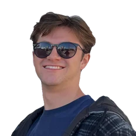

Who am I

I’m Lucas. I taught myself to build with AI on nights and weekends, and became the person people bring their AI questions to at work.
Like many others, I got exhausted by the hollow AI speak and AI strategy buzzwords, so I started building and publishing with it myself.
Outside work, I follow digital assets and all things AI. I’ve been using AI to dig deeper into those interests and build tools I’ve found helpful. The Proof family all started that way.
![AI Slop Agreement. A personal standard, in writing. I will never publish, post, or present anything made by AI that I didn't direct and approve. AI slop is generated content made without a good-faith effort or an earnest review, then published and marketed with no transparency about how it was actually made. What this means in practice: 1. Everything I release is my own doing, AI-assisted or not. I own the ideation, I own the review process, and I take full responsibility for anything with my name on it. 2. I don't misrepresent how my content and projects were made. 3. I don't feign authority with AI buzzwords or deliberately overstate what I actually know. Lucas Cashwell, September 2026.](../assets/who/slop-agreement.webp)